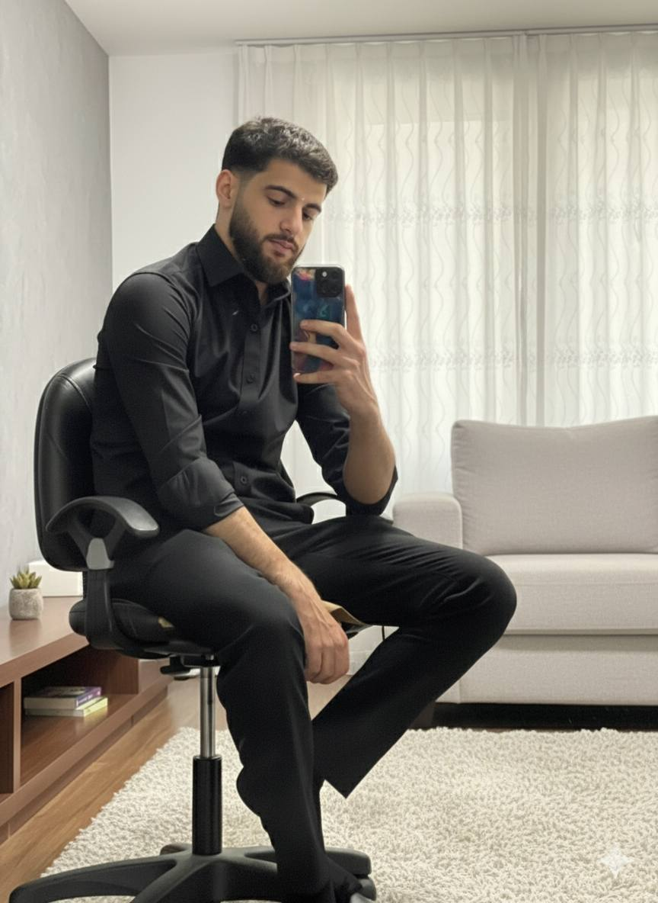

Key Soft Skills
- Teamwork
- Analytical Thinking
- Problem Solving
- Communication Skills
- Adaptability & creativity
Contact: mmjammal21@cite.just.edu.jo
Favorite Languages & Tools
| Item | Learn More |
|---|---|
| Python | python.org |
| Wireshark | wireshark.org |
| Metasploit | metasploit.com |
| Burp Suite | portswigger.net |
Where Do I See Myself in 4 Years?
I envision myself as a cybersecurity professional specialized in penetration testing and cloud security. My goals include obtaining advanced certifications, joining a top security operations team, and contributing to real-world defense strategies that protect organizations worldwide.